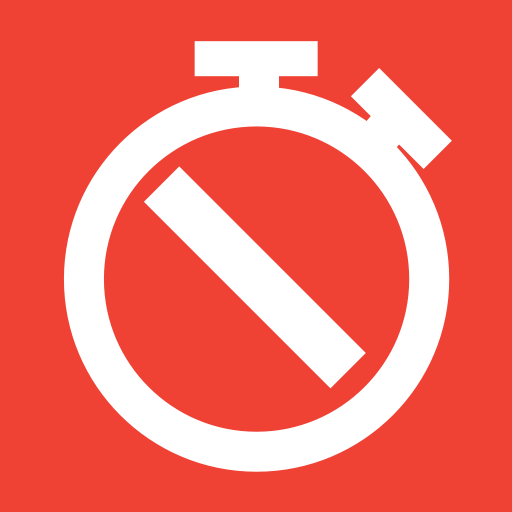
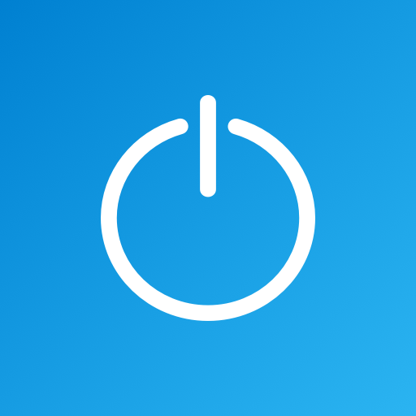

Oramai è rimasta una piccola linea di divisione tra la vita reale e quella virtuale.
Proprio per questo nasce questa guida, che punta ad offrire delle linee guida su come
creare una cooesistenza tra virtuale e reale.
Abbondonare i Social Network non è più un'opzione, significherebbe essere al di fuori
di una parte della nostra società. Sono poche le persone che scelgono questo stile di vita.
Per cui il nostro obiettivo dovrebbe essere quello di creare un equilibrio tra il tempo passato nel mondo virtuale,
che si sta espandendo sempre di più sopratutto grazie alla Realtà Virtuale e Aumentata, e il tempo passato nel mondo reale.
In questa guida si cercherà di chiarire tutti i concetti principali della sopravvivenza nella rete. E impareremo
a trovare un equilibrio attraverso strumenti e concetti tra reale e virtuale.
Le regole della Netiquette
Il termine Netiquette, è un neologismo formato dai termini inglesi
Network (Rete) ed etiquette (etichetta). Sta a significare
l'insieme di regole comportamentali di Internet che trovate elencate qui sotto:
01. Non usare un linguaggio irrispettoso.
02. Non fare flame.
03. Non scrivere tutto in maiuscolo.
04. Usa le emoticons.
05. Rispetta il tema della discussione.
06. Non intervenire subito nella discussione.
07. Non usare la pratica dello spamming.
08. Non inviare catene inutili.
09. Sii sintentico.
Alcuni dati
Analizziamo per prima cosa alcuni dati che mettono
in evidenza la quantità di tempo che ogni giorno spendiamo sui social.
Secondo un'indagine statistica di Kepios (2022) gli utenti attivi (giornalieri) sui social
ammonterebbero a 4,6 miliardi di persone, circa il 58% della popolazione globale.
58.4% of all males like donuts.
Sempre secondo un'indagine statistica di Kepios del 2022 il tempo medio passato sui social
sarebbe di 147 minuti al giorno. Il 30% di una giornata lavorativa media di 8 ore.
58.4% of all males like donuts.
Strumenti per controllare il tempo di utilizzo
Dai dati citati sopra si può notare l'enorme quantità di tempo
che ogni giorno spendiamo sui social media. Esistono vari
strumenti gratuiti che permettono di tenere traccia del tempo
trascorso sui social. Vediamo quali sono:
1. Forest
Permette di creare delle sane abitudini piantando alberi!

2. App Off Timer
È in grado di bloccare l'acesso ad ogni applicazione
dopo un tot. di tempo.

3. Offtime
Ti aiuta ad eliminare la dipendenza dallo
smartphone!
Perchè bisogna essere presenti sui Social
Come anticipato nell'introduzione è ormai essenziale essere presenti sui Social Network.
Dobbiamo puntare a costruirci una nostra identità digitale che
in futuro potrà esserci utile anche in ambito lavorativo.
Tuttavia dobbiamo diventare consapevoli del fatto che l'identità digitale che ci costruiamo sui
social, o in generale nella rete, non è poi così diversa da quella reale. Bisogna stare attenti
ad ogni cosa che pubblichiamo, o che viene pubblicata dai nostri amici e parenti. Ogni singolo contenuto
pubblicato potrebbe ritorcersi contro di noi in alcune situazioni.
Per cui è bene essere consapevoli fin dall'inizio che tutto quello che viene pubblicato sulla rete rimane, nulla sparisce.
E che ciò potrebbe influire in qualsiasi modo sulla nostra reputazione, sia online che nella vita reale.